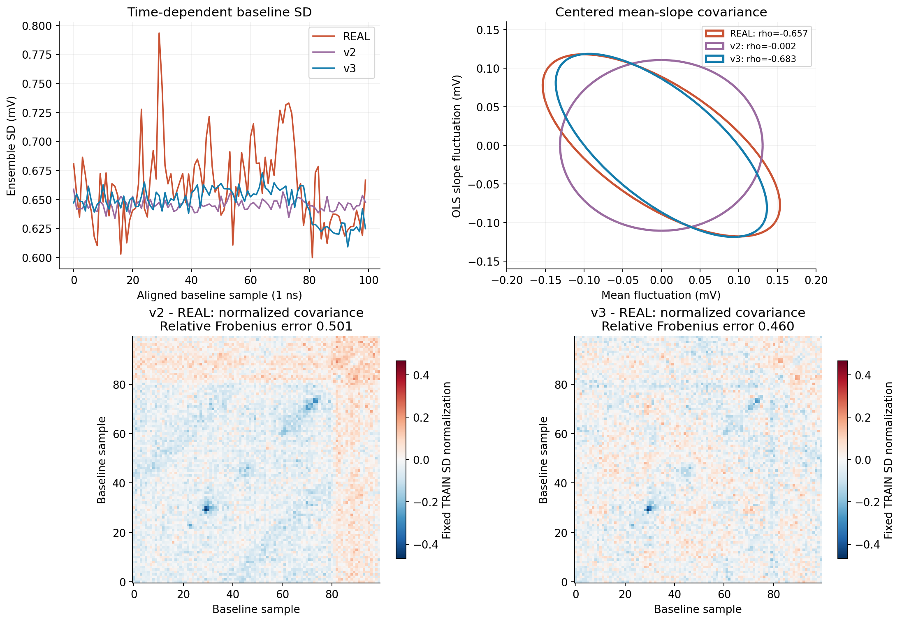
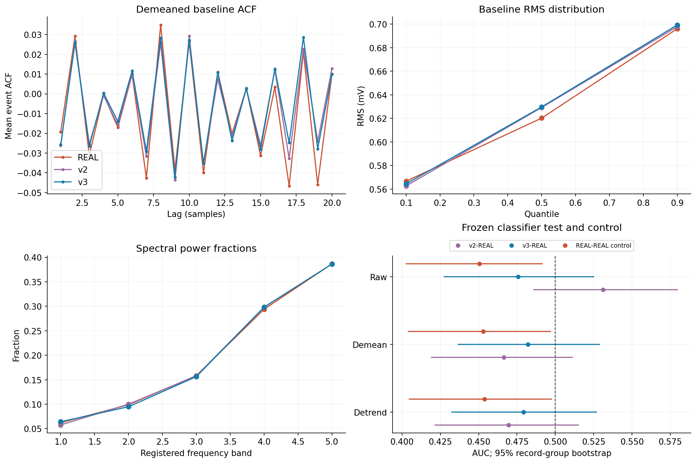
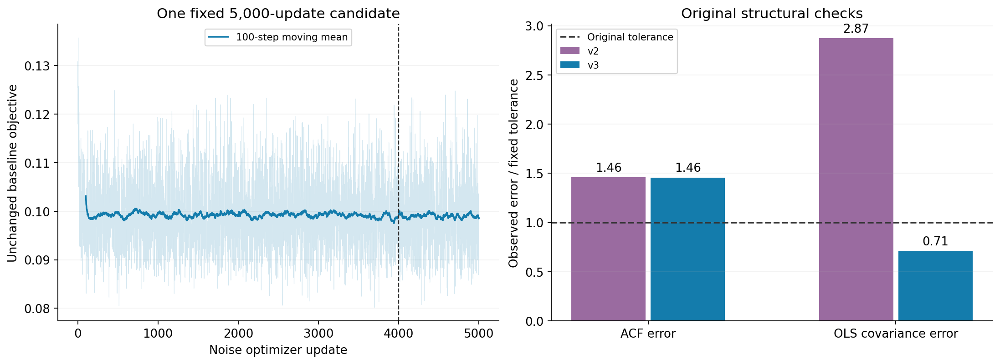

固定候选：100 点非平稳协方差 · 2026-10-12 · 对照 v2 原终点
将平稳 FIR 与独立偏置替换为完整可训练的 100×100 Cholesky 协方差、100 点均值和一个事件尺度。全部 5,151 个参数可训练；尺度满足 E[S²]=1，协方差为 LLᵀ。损失、评价种子和原阈值保持一致，仅使用固定第 5,000 步。
| 检查 | 旧 v2 | 新 v3 | 原容差 | 新结果 |
|---|---|---|---|---|
| 最大 ACF 差 | 0.021871 | 0.021852 | ≤ 0.015 | 未通过 |
| OLS 联合协方差误差 | 0.574359 | 0.141929 | ≤ 0.20 | 通过 |
| 基线均值标准差比 | 0.853831 | 0.890162 | 0.85–1.15 | 通过 |
| 斜率标准差比 | 0.936983 | 1.004837 | 0.85–1.15 | 通过 |
| 完整 100 点 SWD 比 | 0.989586 | 1.001886 | ≤ 2.0 | 通过 |
均值—斜率相关系数：REAL -0.6568，v2 -0.0022，v3 -0.6832。完整 100 点协方差描述性误差：v2 0.5013，v3 0.4598。后者是额外诊断，不是新增验收门。

新模型–REAL 原始基线 AUC 为 0.47571，95% 区间 [0.42757, 0.52492]。REAL–REAL 对照为 0.45052 [0.40264, 0.49146]。旧门的“阴性区间包含 0.5”条件仍按原样执行，未改判历史结果。

固定终点后的描述性定位：v3 最大 ACF 差在滞后 17 点，v2 最大差在 19 点；TRAIN–VAL 本身的最大差为 0.01213。现有显式 ACF 训练特征覆盖 1–16 点，完整 100 点分布目标仍会间接约束更长延迟。扩展显式延迟特征可作为下一轮候选依据，尚未实施或验证；本轮没有据此重训、改门或选种子。
噪声训练 5,000 次；评价分类器另计 1,200 次；脉冲训练 0 次。最终模型保存后才读取本轮验证波形。重开并重放 1,024 条生成基线、6 个分类器共 3,072 个分数；重放只证明数值可复现。完整回执见下方链接。

结果针对既有采集、筛选、量化和对齐后的观测基线。599 条验证记录来自同一份此前已查看的采集，12 个记录组不构成独立采集。该模型不识别电子学硬件来源，也不能自动外推后续 380 点。高斯全局尺度混合仍限制偏斜、方向相关尾部和多模态；分类器接近随机不等于证明分布完全相同。
本轮停止在已登记的噪声候选终点。下一步应根据剩余失败项和实际可用数据另行绑定完整 480 点的噪声模型，不能把短窗拟合直接拼成整段响应。